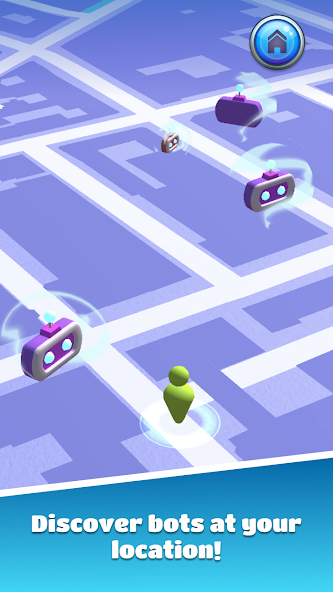
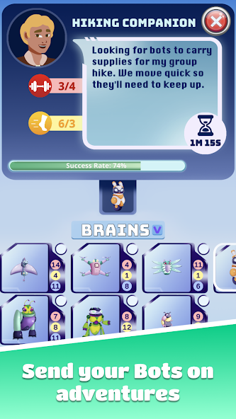
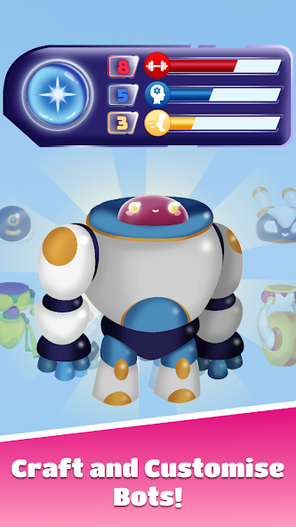
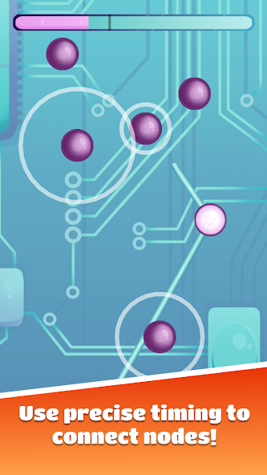

The Mobi project is the first project I worked on in my first job. Mobi is an android app made in Unity and C# that combines teaching people how to use phones with a fun game. The game is partially inspired by Pokemon Go. I worked on the game part of the app, with another programmer, a game designer, and an artist.
For the first few months, I was the main programmer, mostly learning from my boss who was also a programmer but was working on the learning part of the app. I was able to learn a lot just by working on the project, as different parts of the game required many various techniques to be implemented nicely. Working with another programmer and with a designer led me to structure aspects of the game so that we can all work on parts of the game separately without having merge conflicts.
Throughout this project, I implemented an exp system, inventory with a sorting system, crafting system, missions system with various requirements, and settings page, and tweaked a location-based map that used the Google Maps SDK for Unity. I also prototyped and built two different games to be used as minigames for this app. Different skins and a micro-transaction-based shop system were also added to the game.
I learned various conventions and techniques to create games in Unity. Learned about how coroutines work, scriptable objects, addressables, split binaries, and different ways to structure a project for better modularity. I used the persistent data path to store player collection and information on their phone. I learned how to use addressables and split binaries to make the size of the app smaller, to allow it to be under the Play Store's size requirements. I also learned quite a few different tools that help enhance an app, for example, lerping, making custom scroll views, dropdown menus, animations, and sound effects. We used some complex 2D animations, and I learned how to use them for simple animations instead of programming the animations I wanted. The beebyte obfuscator was used to hide some of the implementations of our game, and I learned how to use some aspects of it.
There is an Augmented Reality section of the game that replaces the usual minigame. I was the person in charge of implementing this section. I initially wanted to use ARFoundation to help create the AR section of the game, but tried out Niantic Lightship later, as it could potentially offer more features. As some of the minigames I needed to implement were similar to minigames I made for my master's project, I converted some of that C# code to interact with the Niantic Lightship API. I applied what I had already learned from earlier work in this project to improve and refactor some of the code.
These screenshots taken from the store page show some sections of the game I worked on.
GPS Location-Based Map

The map uses the Google Maps API. I worked on the camera movement, zooming, spawning of collectable items, and the appearance of map structures.
Task System and Inventory

I created most of the task system and inventory system myself. The tasks are generated with random stat requirements, pulling names and descriptions from a Scriptable Object. The bot(s) selected to participate in the task affect the success rate and the speed at which the task is done.
The inventory system allows sorting of bots by different stats and the type of bot. They can also be selected on an inventory screen to be enlarged with more detailed stats shown. The bots are stored in a JSON format in a text file in the persistentDataPath.
Crafting system

The crafting system lets the player combine different "heads" and "bodies" of bots to create a full bot. The combined stats of the bot is shown when choosing parts. An optional "core" can also be added to boost the stats even futher. A small animation also plays when the bot is crafted.
Catching Minigame

This is the minigame the user plays to acquire bot parts after finding them on the map. This part of the game is (unnecessarily) in a additive scene. I used an additive scene because I was learning about it and it was also a hack to get around some issues at the time. The game required the player to touch the checkpoints with precise timings, there are three different difficulties based on the type of bot part found on the map. The checkpoints' positions and timings are all randomly generated.
Catching Minigame
This is the newest menu system. It uses a series of coroutines with lerping formulas to create nice fading and movement effects that make the menu feel nicer.